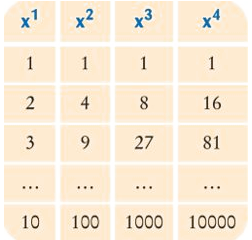

4.3 Bucles
Bucles Niats
Què són
La seva principal funció és iterar dins de taules amb més de 1 dimensió, com seria una taula de files i columnes (2D), o una taula espaial (3D).
Sovint, quan treballem amb un espai 2D, direm que tenim el bucle exterior i el bucle interior. Com els seus noms indiquen, l'exterior té a dins, el bucle interior.
Per exemple, per omplir la següent taula:  Utilitzarem una estrcutura semblant a:
Algorisme TaulaExponencial
files = 10
columnes = 4
per i de 1 fins files fer //Per cada fila ( 1 --> 10)
per j de 1 fins columnes fer //Per cada columna d'una fila ( 1 --> 4)
escriure i^j
fi per //Podrem sortir si hem fet les 4 columnes
esciure salt de linia //Acabem l'escriptura de la linia " i "
fi per //Podrem sortir si hem acabat les 10 files